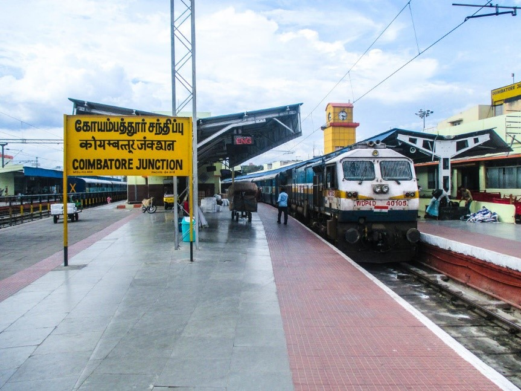

COIMBATORE

Coimbatore or Covai also known as the manchester of the south is a District in north west of Tamil Nadu
- Air : Nearest Airport Coimbatore International Airport
- Train : Main Station Coimbatore Junction and pothanur Junction
- Road :
- NH 544(Salem--Kochi)
- NH 81(Trichy Road)
- NH 181(Metuplalayam Road)
- NH 948(Sathy Road)
- NH 83(Pollachi Road)